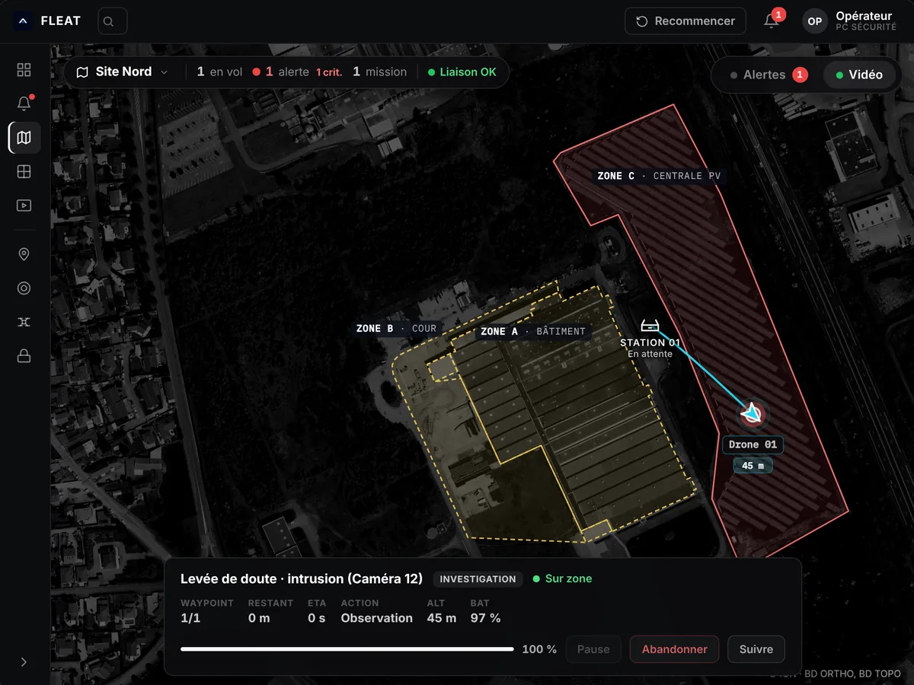
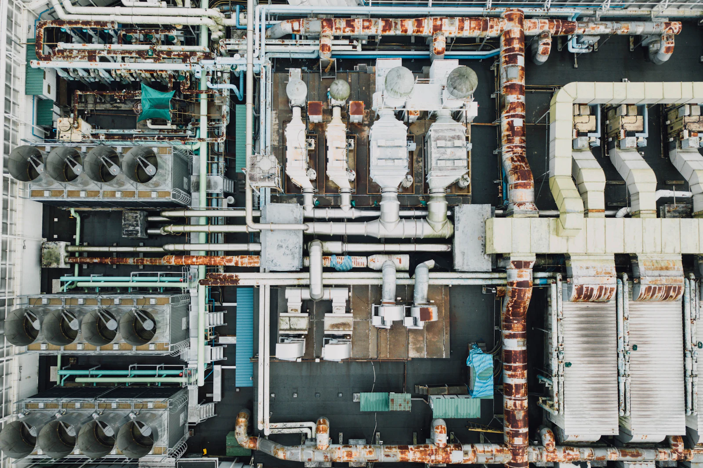

Surveillance de sites industriels par drone
Un grand site.
Vu depuis le ciel.
Usines, aciéries, cimenteries. Un drone en station sur place, suivi depuis votre PC sécurité.
Tout le site sur un écran.
Ce que voit l'opérateur au PC sécurité, pendant une levée de doute.

- 1État du site
Drones en vol, alertes en cours, état de la liaison. Tout le site en une ligne.
- 2Zones
Bâtiment, cour, centrale : chaque zone a ses priorités et ses horaires de ronde.
- 3Station
Le drone y attend et s'y recharge seul, entre deux missions.
- 4Drone en mission
Sa position et son altitude en direct, sur l'image réelle du site.
- 5Levée de doute
La mission en cours : progression, observation, et la main pour l'opérateur.
Interface FLEAT · données de démonstration. Orthophotographie © IGN.

Ce qu'un agent ne voit pas depuis le sol.
Toitures, réseaux, armoires électriques. Le drone les observe à chaque ronde, en visible et en thermique, sans exposer personne en hauteur.
Vos questions.
Il fait des rondes programmées sur les stocks extérieurs, les accès et les zones sensibles. Sur alerte, il part vérifier la zone. Sa caméra thermique aide aussi à repérer un échauffement sur les zones électriques.
Non. Le drone renforce la capacité d'observation et accélère la levée de doute. Vos équipes gardent la décision et interviennent quand c'est nécessaire.
Oui, c'est le principe. Une alarme ou une détection caméra peut déclencher une mission. La compatibilité précise est confirmée pendant l'étude de votre site.
Oui. Il emporte une caméra visible et une caméra thermique, pour des vols de jour comme de nuit.
Jusqu'à 40 ha par vol, selon la configuration du site. Entre deux vols, le drone se recharge seul dans sa station.
Cela dépend du site et de son environnement aéronautique. Nous préparons le scénario de vol selon le cadre applicable, avant tout engagement.
Oui. Les zones à éviter sont définies pendant l'étude : process sensibles, zones à risque, voisinage. Les trajectoires les contournent.
Les conditions météo font partie des contraintes étudiées dès la conception. Les scénarios de mission en tiennent compte.
Nous regardons notamment : surface et topographie du site, emplacement possible de la station, zones à survoler et zones à éviter, environnement aéronautique, systèmes de sécurité déjà en place. Un drone ne s'installe pas partout : la faisabilité est étudiée avant tout engagement.
Étudions votre site.
Décrivez-nous votre site et vos enjeux. Nous évaluons la faisabilité d'un dispositif adapté à vos contraintes.